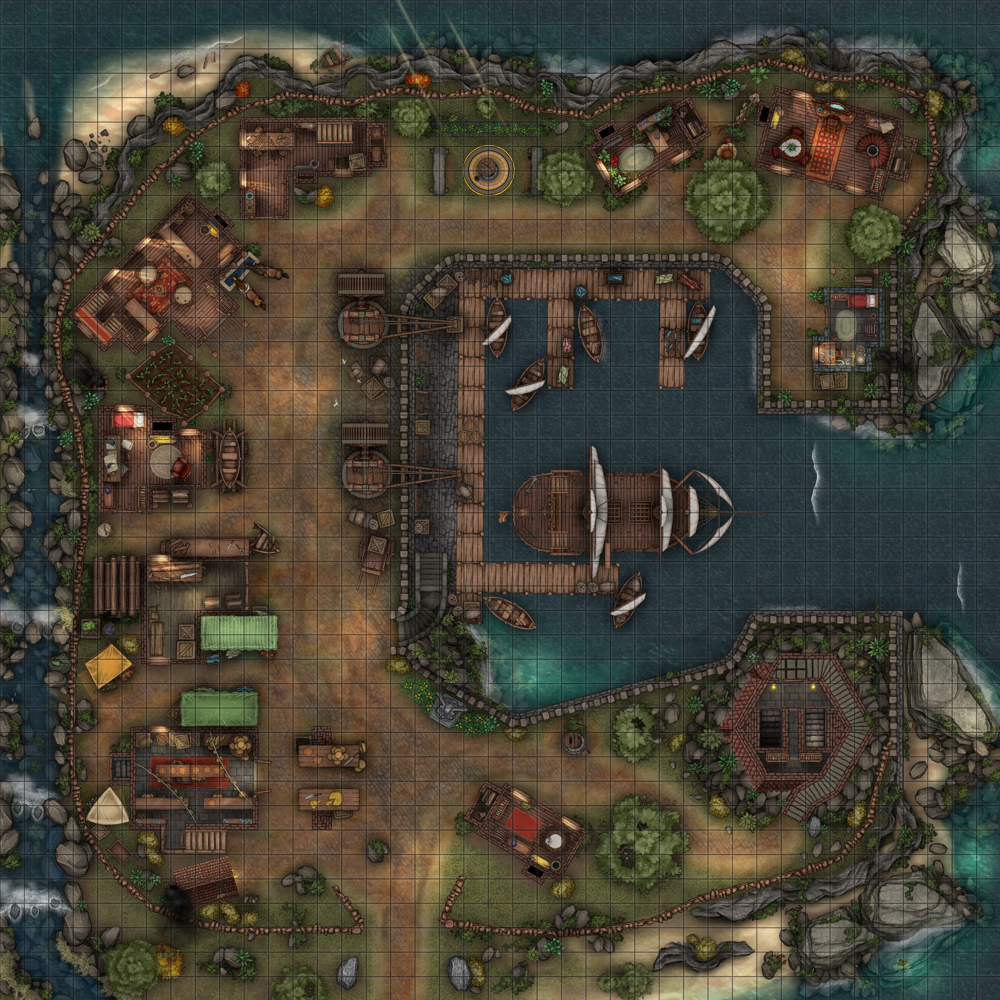
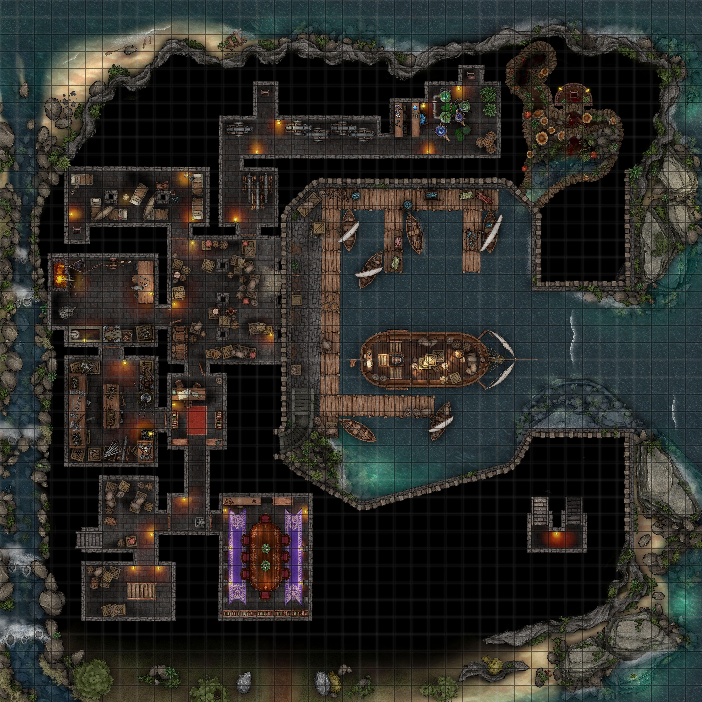

This place is to function as a compendium of knowledge for my homebrew setting, a space for those passionate about high fantasy, seekers of lore, and daydreamers. You can find images of our various heroes, learn basic knowledge of the realm, and even ask The Author deep lore questions!

